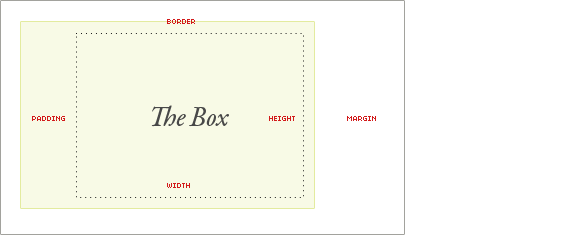

The Box Model
In CSS each element is represented as a rectangular box, this rectangular box is known as the “Box Model”. Each box has four edges to them, the content edge, padding edge, border edge, and margin edge. The content area is the inner most part of the element, followed by the padding, then border, and lastly margin is outside of the box and shifts the entire element. To figure out the width of your element, you have to add the margin-right + border-right + padding-right + width + padding-left + border-left + margin-left. To figure out the height you use the same pattern but instead of right and left, you use top and bottom values. Having a good grasp on the box model will help you layout your web pages easier, since items before might have been larger than you thought. No more trying to figure out why two of your section elements won’t fit side by side.

Margin, Padding, and Border
You may think that “wow using the box model has a lot to type with padding-left and margin-bottom”. Luckily there is another way! These CSS properties have a nice syntax shorthand with them. Instead of listing every side (e.g. margin-top, margin-right, margin-bottom, and margin-left and so on), you just have to write margin: # # # #. The ‘#’ is a placeholder for the values that correspond to sides of the box. The shorthand versions start at the top with the first value and progress clockwise. This works for both margin and padding. But what if you want every side to be the same value you ask? Simple just type the first value (e.g margin: 2px;) and thats it. It will apply that value to all four sides. If you have the same value for the top and bottom and another value that’s the same for the right and left sides you only need to use the first two placeholders (e.g. margin: 2px 4px;). The first value will apply to the top and bottom, and the second value will be applied to the right and left. Lastly if you have the same left and right values, but different top and bottom values you can write it like this ‘margin: 5px 10px 2px;’. This takes the first value and applies it to the top, the second value is applied to both right and left, and the third value is applied to the bottom. I hope that this helps you cut down on what can seem like lines and lines of code to do not that much work.